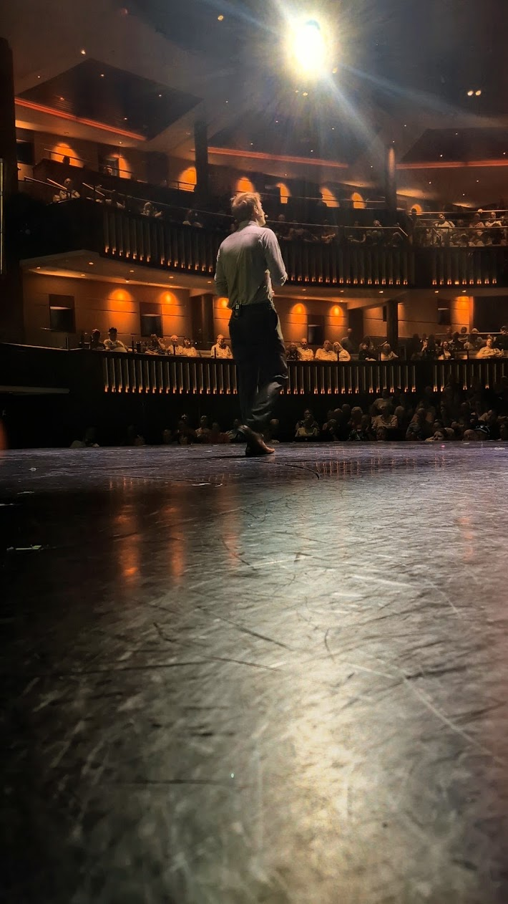
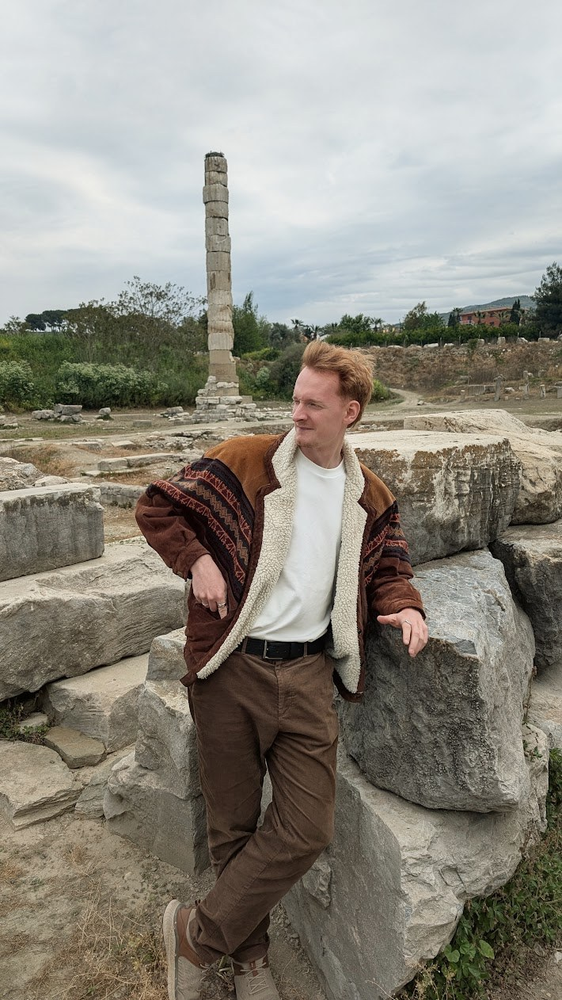

Where the Hand of God Cannot Reach
An Englishman in Argentina reflects on the historic rivalry before the World Cup semi-final.
“There’s no secret to making history come alive. Barbara Tuchman said it perfectly: ‘Tell stories.’ The pull, the appeal, is irresistible, because history is about two of the greatest of all mysteries — time and human nature.”
David McCullough
I'm Jacob. My stories run from the Bronze Age to the Panama Canal, but they're really all about the same thing: people, and what they did when the world changed around them.
Just seen me on stage? You're in the right place.

Filmed at my table, as if you'd joined me for dinner.
If you're on board, come and say hello after a talk. I'm always happy to keep going.
Itineraries can change. Check the cruise line for the latest.
Some stories won't fit into a talk, however fast I speak. Those go here, along with whatever I've been reading and quietly arguing with.
An Englishman in Argentina reflects on the historic rivalry before the World Cup semi-final.

I'm an Englishman who ended up living in Argentina. I'd love to tell you there was a grand plan. In truth, I fell for the history of South America, someone told me I'd never really understand it without Spanish, and by the time I'd learned the language I'd fallen for the country too.
I studied archaeology at Newcastle University and went looking for history with a trowel: digging in Jersey, working at the museum in Nairobi, and excavating on Zanzibar, where I also built 3D models of sites from photographs (photogrammetry, if you want to impress someone at dinner). These days I've traded the trowel for a microphone, but the questions are the same: who were these people, and what happened to them?
What I love most are primary sources: the letters, diaries, court records and complaints left by people who were actually there. I want to hear them explain what they did and why, in their own words. Most of them are lying, of course. That's half the fun.
Run a library, museum, society or event? I give talks. Tell me about your audience and I'll tell you what I can do.
Any of the subjects on this site, pitched for whoever's in the room, from the people who've read everything to the ones who were dragged along. The second group are often my favourite. I'm happy to come to you, or to join you online from Buenos Aires.
Rates on enquiry.